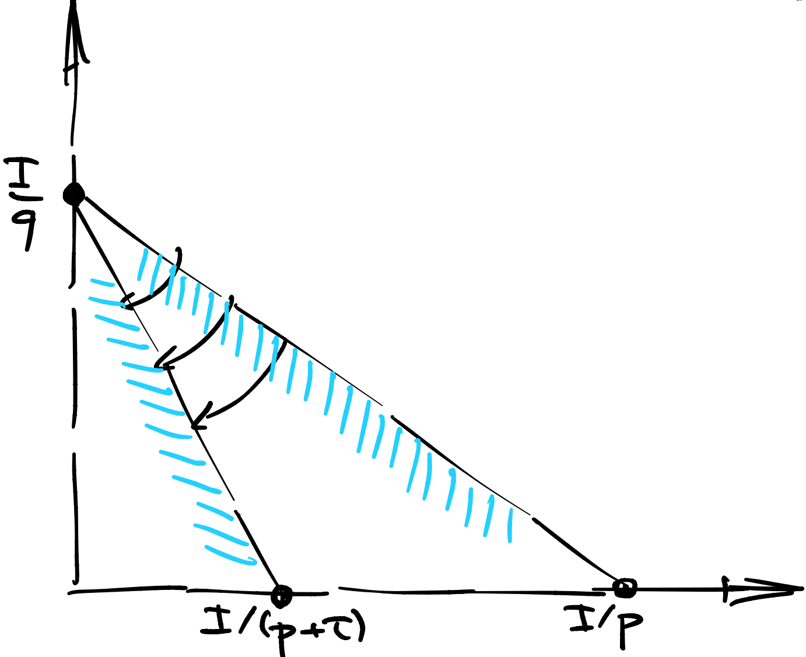

Четвертая лекция, часть 1¶
Оптимальное налогообложение¶
Исторически сложилось так, что государство финансирует свою деятельность, а также производство общественных благ за счет налогообложения. Есть три вида налогов:
подоходный фиксированный (паушальный, от нем. “Pauschale”) налог
подоходный пропорциональный налог
товарный налог
В разные периоды времени, разные налоги пользовались популярностью.
Простота паушального налога в том, что его можно ввести практически моментально, и его имплементация сводится к знанию своих подданых в лицо. Однако, вы не можете установить паушальный налог больше чем, грубо говоря, минимальный прожиточный минимум. То есть, чтобы собрать большую сумму паушальным налогом, вам придется освободить какую то часть населения от этих налогов. Как только вы начинаете дискриминировать, то есть, говорить кому платить а кому не платить налог, он становится, в какой то степени, пропорциональным.
Обычный пропорциональный налог означает, что каждый агент платит пропорционально своему доходу. К примеру, когда король Ричард Львиное Сердце попал в плен, английской короне пришлось платить выкуп, за счет временного пропорционального налогообложения размером 25%. Таким образом, удалось в короткие сроки собрать огромную по тем временам сумму, примерно составляющую трехгодовой объем английской казны.
Геометрически, оба подоходных налога можно изобразить как параллельный сдвиг бюджетной линии, см. иллюстрацию.

В современной экономике, основную роль играет товарный налог: VAT в США и НДС в России. Идея этого налога в том, что за каждую единицу проданного товара или оказанную услугу, предпрениматель платит процент от добавленной стоимости.
Геометрически, товарный налог отвечает за поворот бюджетной линии вокруг вершины, см. иллюстрацию.
{kind=link}
Товарный налог хорошо адаптируется под быстро меняющуюся экономику. Например, если какой то город начинает экономически расти, растут требования к окружающей его инфраструктуре: дороги, дома для рабочих, школы и университеты и так далее. Но также растут продажи товаров и услуг и соответственно растут налоговые сборы, покрывающие инвестиции в инфраструктуру.
Задача налогообложения может быть сформулирована как либо максимизация чистых налоговых сборов, либо максимизация косвенной полезности при фиксированных налоговых сборах. На выбор, как правило, есть либо подоходный либо товарный налог.
Налоги в Кобб-Дуглас¶
Рассмотрим полезность Кобб Дуглас
и введем налог размера \(\tau\). Наш анализ оптимального налогообложения будет сильно зависеть от того, с какой легкостью мы выписываем косвенную полезность.
Подоходный налог¶
Если налог подоходный, то косвенная полезность и налоговые сборы будут равны:
Максимизация чистых налоговых своров тут не представляет сложности - надо просто выставить \(\tau = 1\), то есть отобрать все деньги. Максимизация косвенной полезности при фиксированных налоговых сборах тоже тривиальна: \(\tau = T/I\).
Товарный налог¶
Пусть товарные налоги равны \(\tau_x, \tau_y\) соответственно, тогда косвенная полезность и налоговые сборы будут равны:
Максимизация чистых налоговых своров это задача безусловной оптимизации:
У этой задачи несколько контринтуитивное решение: необходимо назначить бесконечно большой налог на оба товара, тогда удастся собрать, в пределе, точно \(I\). Это, конечно, не очень реалистично, но модель есть модель.
Максимизация косвенной полезности при фиксированных налоговых сборах это задача условной опримизации. Она уже более интересная:
Условия первого порядка:
Другими словами,
То есть, кажется, что оптимальные налоги должны быть выставлены пропорционально ценам. Это классный вывод, только нам осталось проверить что задача выпуклая. Благо, Гессиан - диагональная матрица.
Вычислим вторые производные.
Это не бог весть какое сложное упражнение, но вот код в wolframscript, который можно установить бесплатно.
sub = Solve[D[-a Log[p + x] + l a B x/(p + x), {x, 1}] == 0, l][[1]]
D[-a Log[p + x] + l a B x/(p + x), {x, 2}] /. sub // Simplify
Нам очень повезло, и Гессиан, действительно, отрицательно определен:
Значит наше внутреннее решение - локальный оптимум.
Подставляя оптималный налог в спросы можно вывести, что
Это очень похоже на то, что было бы без налогов. Складывается впечатление, что оптимальные налоги устроены так, что они не меняют доли расходов, потраченные на каждый товар. Таким налогом, к примеру, является НДС (VAT в США). Более того, если присмотреться, то этот налог эквивалентен подоходному налогу, ведь он тоже не меняет доли. Другими словами, когда товарные налоги пропорциональны ценам, то бюджетное множество сдвигается параллельно, в точности как у подоходного налога.
Мы только что доказали, хоть и в малой общности, одну из самых глубоких экономических мыслей в теории налогообложения:
Property 23 (Оптимальность НДС)
Оптимальные налоги в Кобб-Дугласе - не искажают потребление.
По хорошему, надо еще проверить что потенциальные краевые решения не лучше чем наш внутренний локальный оптимум, но это упражнение я оставлю читателю.
Правило Рамсея¶
Что-то наподобие закона обратной эластичности было выведено для задачи оптимального налогообложения экономистом Фрэнком Рамсеем в начале 20 века. Своей целью он ставил минимизировать ненужные потери общества при потреблении, путём введения дифферинцированной ставки налогообложения на различные товары. То есть, в точности максимизация косвенной полезности при зафиксированных налоговых сборах:
Выпишем условия первого порядка:
Вспомним, что по теореме об Огибающей, производная косвенной полезности пропорциональна обычному (Маршалианскому) спросу. Действительно:
Получается, что в оптимуме
Мы только что доказали (немножко игнорируя вопросы выпуклости) один из самых нетривиальных фактов в теории оптимального налогообложения:
Property 24 (Правило Рамсея)
Оптимальные налоговые ставки пропорциональны обратным эластичностям обычного (Маршалианского) спроса:
другими словами, менее эластичные товары должны облагаться более сильным налогом чем более эластичные.
Это правило обобщает результат, который мы вывели в Кобб-Дугласе, поскольку в Кобб-Дугласе все эластичности потребления по цене постоянны, равны друг другу и равны \(-1\).
Компенсирующие и эквивалентные вариации¶
Мы освоили технику оптимального налогообложения. Это очень удобно, но иногда все равно приходится идти на попятную и точечно корректировать доход отдельным людям, возможно, из социально незащищенных слоев населения.
Поставим задачу вычисления денежной компенсации, которая сбалансирует повышение цен связанное с налогообложением или еще чем то. Сделать это можно двумя способами: при помощи компенсирующей и эквивалентной вариации.
Компенсирующая вариация¶
Предположим, что полезность агентов была изначально на уровне \(\bar U_0\) и произошло смещение цен \(p \to p'\). Полезность агентов, конечно же упала. Определим компенсирующую вариацию как изменение дохода, которое вернет их на изначалььный уровень \(\bar U_0\).
Definition 37
Компенсирующая вариация определяется как изменение в расходах, ассоциированных с первоначальным уровнем полезности
Другими словами, государство как бы возвращает агентов на их стартовую полезность. Стартовая полезность это статус кво.
Эквивалентная вариация¶
Предположим, опять, смещение цен \(p \to p'\) и что полезность агентов упала до уровня \(\bar U_1\). Определим эквивалентную вариацию как изменение дохода, которое было бы эквивалентно этому смещению цен, с точки зрения падения полезности.
Definition 38
Эквивалентная вариация определяется как изменение в расходах, ассоциированных с новым уровнем полезности
Другими словами, государство как бы говорит: “если я верну все назад (и не заплачу вариацию), вы потеряете эквивалентно в полезности”. Сдесь новая полезность это стаус кво.
Подсчет вариаций через \(E\)¶
Если вам комфортнее думать в терминах функции расходов, то все что вам надо сделать это сосчитать уровни полезности до (для CV) и после (для EV) изменения цен и подставить в определение.
К примеру, в Леонтьевской полезности функция расходов выписывается бысстро, если вспомнить, что левый и правый аргумент функции минимума обязаны давать одно и то же значение в оптимуме:
Далее, если цены перешли \((p,q) \to (p',q')\) то полезность перешла
Получается, что
Вот и все.
Подсчет вариаций через \(V\)¶
Если вам комфортнее думать в терминах косвенной полезности, то CV и EV это решения достаточно простых нелинейных уравнений:
Преимущество этого подхода в том, что сами уровни полезности вам считать не обязательно. Можно сэкономить на выкладках.
К примеру, в полезности Кобб Дуглас, косвенную полезность можно запомнить с точностью до константы, которая все равно сократится в правой и левой части уравнения.
Для компенсирующей вариации:
Для эквивалентной вариации:
Первое приближение¶
Посмотрим внимательно на компенсирующую вариацию:
Это читается так: если цена \(p\) выросла на \(X \%\) а цена \(q\) выросла на \(Y \%\) то компенсирующая вариация должна увеличить бюджет на \(\alpha X + \beta Y\) процентов, в первом приближении.
Кстати, ни эквивалентная, ни компенсирующая вариации не зависят от нормировки полезности, поэтому вы можете выбирать удобную вам трансформацию. Вот и все.
Второе приближение¶
Зафиксируем \(q\) и пусть меняется только цена \(p\).
Определим \(\delta p = p'-p\) как приращение цены. Мы хотим приблизить нелинейное уравнение
подставим все в экспоненту
разложим в ряд Тейлора до второго члена
То есть, \(CV\) во втором приближении это
Когда приращения достаточно большие (между 10 и 90 процентов), рекомендуется делать квадратичное а не линейное приближение.
Если приращение больше 100 процентов, то никакое приближение не сработает, так как у \(\log(1+x)\) радиус сходимости равен единице.
Чистые субституты и комплементы¶
Напомню, что первое определение субститутов и комплементов опиралось на перекрестные производные (маршаллианских) спросов по ценам. Несмотря на кажущуюся простоту и интуитивность этого определения, ничего не сдерживало нас от построения таких примеров где товар \(х\) был бы субститутом к \(y\), при этом, \(y\) был комплементом к \(x\).
Сейчас мы дадим альтернативное определение субститутов и комплементов. Для экспозиции, предположим два товара \(х,y\) с ценами \(p,q\).
Definition 39
Чистыми субститутами называются пары товаров, такие что
Definition 40
Чистыми комплементами называются пары товаров, такие что
На первый взгляд, не совсем понятно, чем помогает замена Маршалианского спроса на Хиксианский в определении. Однако, поскольку Хиксианский спрос это градиент функции расходов, то градиент Хиксианского спроса это Гессиан функции расходов.
А Гессиан, он же матрица Гессa - симметричная матрица.
Property 25
Пусть \(h\) - весь вектор Хиксианского спроса, тогда
Другими словами, перекрестные производные Хиксианского спроса по ценам - симметричны и нет больше никакого противоречие. Чистая субститутабильность/комплементарность это свойство пары товаров, неважно как эта пара упорядочена.
Кобб Дуглас¶
Напомним, что на предыдущей лекции мы вывввели хиксианские спросы:
Тогда перекрестные производные элементарно выводятся
Property 26
Все товары в Кобб-Дугласе являются чистыми субститутами.
Леонтьев¶
Напомним, что на предыдущей лекции мы вывели хиксианские спросы:
Тогда перекрестные производные равны нулю.
Property 27
Все товары в Кобб-Дугласе являются чистыми комплементами.
Действительно, при фиксированной кривой безразличия изменение цен просто вращает бюджетную линию вокруг точки касания, а спросы при этом не меняются.
Почему ноль это комплементы?¶
Конечно, можно было сказать что ноль это что-то среднее между субститутами и комплементами, но исторически ноль закреплен именно за комплементами, поскольку полезность “уголки” скорее интерпретируется как “комплементы”.
Некоторые авторы предпочитают строгие неравенства во всех определениях, это дело вкуса.